Part 4 · Spatial prediction · Chapter 6
GCF
Generalized covariate field
The question
Does the neighbourhood of a location, the pattern and the distribution of each covariate around it, improve a spatial prediction made from the covariates alone?You need
A grid with numeric covariates and projected coordinates, and sample points (or a table with cell IDs) with a numeric response y.You get
New neighbourhood variables on the grid, a stable selection of them, two prediction surfaces (with and without them) and a cross-validation that compares the two.1The method
The idea
A prediction model usually reads each covariate at the location itself: the elevation here, the rainfall here. Often the response also depends on what surrounds the location: the typical value nearby, how variable the surroundings are, whether the location is an outlier among its neighbours. GCF turns each covariate into such neighbourhood variables, keeps the ones that matter in a stable way, and then tests by cross-validation whether they improve a random-forest prediction (Song 2026).
It works in three parts, which are the three runs of the tool:
| Part | What it does | Result |
|---|---|---|
| Generate the field | Around every grid cell, the neighbours within each buffer radius give spatial-pattern (P) and neighbourhood-distribution (D) variables. No response is used. | New fields on a copy of the grid, and a catalogue of them |
| Select variables | Spatial blocks are resampled B times; each time a random forest ranks all variables. A group of variables passes when one of its members is ranked in the top K often enough. | The selected set: all raw covariates plus one variable from each group that passed |
| Predict and cross-validate | One random forest on the raw covariates (the baseline) and one on the selected set, both mapped over the grid and both cross-validated, with the selection repeated inside every fold. | Two prediction surfaces, and R² and RMSE of both models |
The variables
Each variable is computed for a fine and a broad band of buffer radii (by default the smallest and the largest radius). For every covariate GCF makes 20 P variables and 10 D variables:
| Category | What it describes | Variables |
|---|---|---|
| X | The raw covariate at the location | Kept as it is, always in the model |
| P, spatial pattern | How the covariate is arranged around the location | LISA, local Geary's c, log local variance, rank-quantile entropy, local variogram exponent, z-score and MAD outlier strengths (each fine and broad); geocomplexity and log scale variance (once each) |
| D, neighbourhood distribution | Which values the covariate takes around the location | Median, IQR, low tail, high tail and quantile skew of the neighbourhood's quantile curve (each fine and broad) |
The names say what a variable is: x2_D_broad_iqr is the interquartile range of x2 in the broad neighbourhood, x3_P_gc the geocomplexity of x3.
When to use it
- You predict a variable over a grid from covariates and suspect that the surroundings of a location matter, as well as its own values.
- You want to know which neighbourhood properties are used, with names you can interpret, and to map them.
- You want an honest comparison: the same model with and without the new variables, validated in spatial blocks.
Where it has been used
| Field | Response y | Spatial unit | Study |
|---|---|---|---|
| Biodiversity | Plant species richness in southwest Australia | 10 km grid cell | Song (2026), with the vegetation plots of Mokany et al. (2022) |
| Simulation | A spatially autocorrelated random field | Cell of a 30 × 30 grid | Song (2026) |
Any response measured at some locations fits, when the covariates are known over a grid or a dense set of points with projected coordinates: soil properties, air quality, species richness, urban indicators.
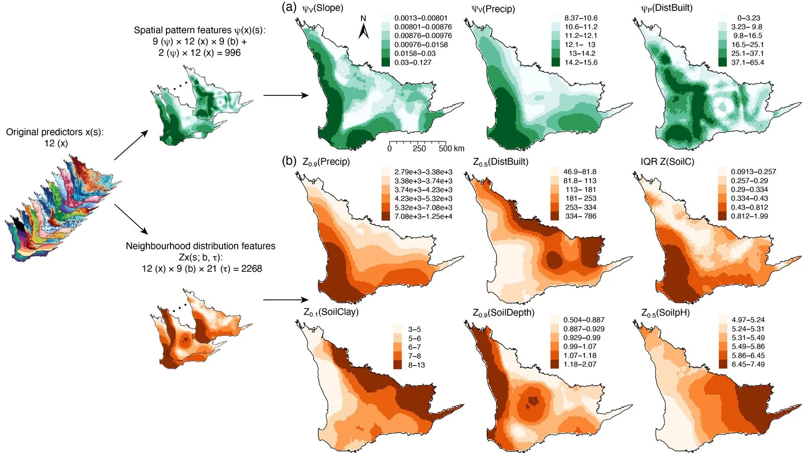
Keep in mindStability is not evidence of prediction. A variable can be selected in a stable way and still add nothing: noise passes too. The cross-validation is the evidence that the GCF variables help.
2In Heterra
2.1 Prepare your data
Two layers are needed and a third is optional (Part 1 shows how to add data).
| Layer | Content | In the example |
|---|---|---|
| Grid | One row per cell (points, polygon cells or a raster grid) with numeric covariates and projected coordinates | About 7400 cells of 1 km with x1, x2, x3 |
| Samples | One row per sampled location with the response y; points, or a table with a cell ID | 900 random points with y1, attached to the nearest cell centre |
| Boundary (optional) | A polygon layer | The study area's outline. It only shapes the maps in the charts and changes no result. |
All three layers of the example are simulated, so its numbers illustrate the tool and do not describe a real study. The coordinates are in km with no coordinate system. y1 was made to respond to the neighbourhood of a location: the mean of x1 and the spread of x2 around it, besides x3 itself and a smooth field that no covariate shows.
2.2 Run the example, step by step
Open the tool from the Toolbox (Spatial prediction → GCF), click Tutorial, then Load Example. The grid, the sample points and the boundary appear as three layers, and the panel on the right is filled in for you.
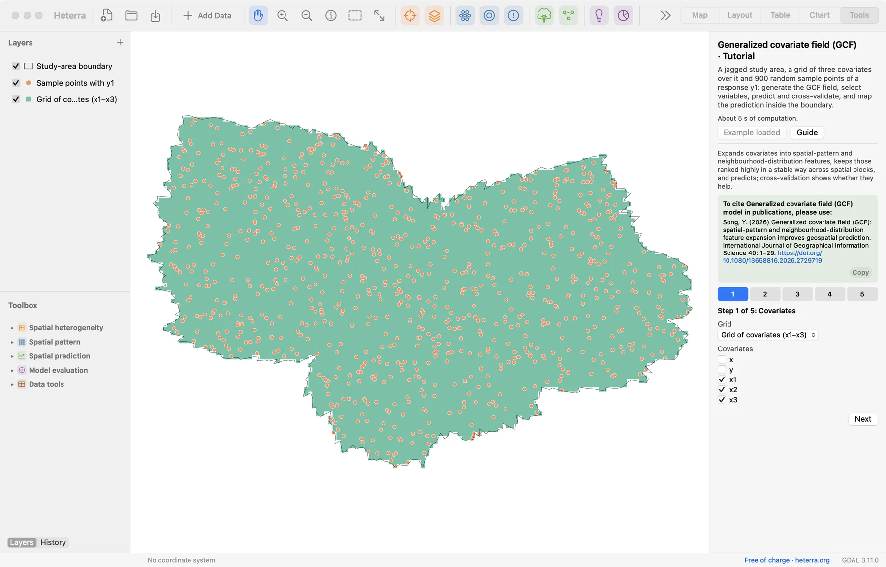
The panel has five steps and three runs. Run appears at steps 2, 4 and 5; a green tick on a step's button shows that its run is done. The pictures below show the panel after the runs.
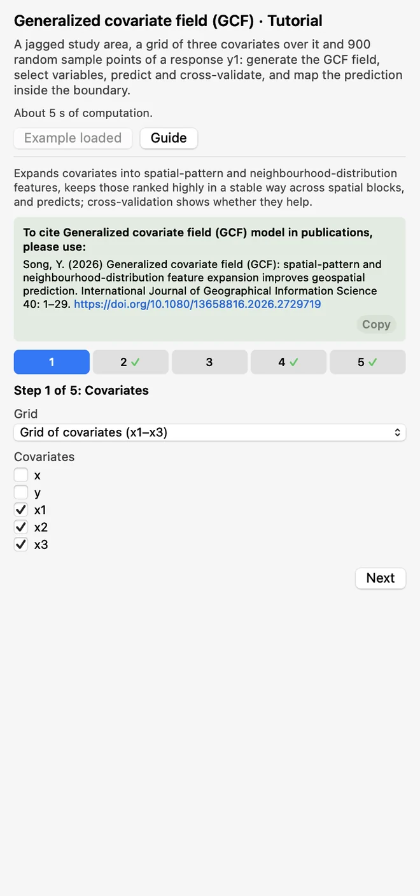
CovariatesChoose the grid and tick the covariates:x1,x2,x3. The coordinatesxandystay unticked.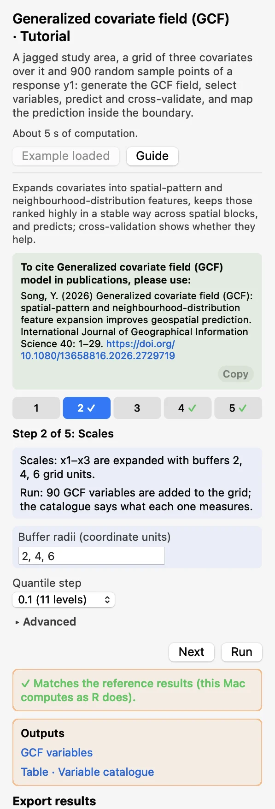
ScalesBuffer radii 2, 4, 6 and Quantile step 0.1. Click Run: 90 new fields are added to a copy of the grid.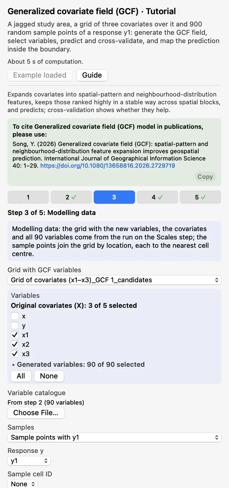
Modelling dataThe grid with the new fields, the three covariates and all 90 GCF variables are filled in from that run. Choose the samples andy1.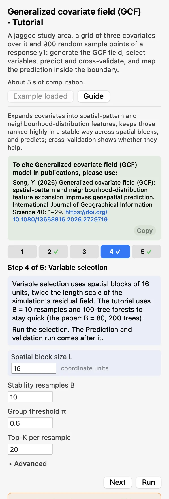
Variable selectionSpatial block size L 16, Stability resamples B 10. Click Run: the selected variables are shown.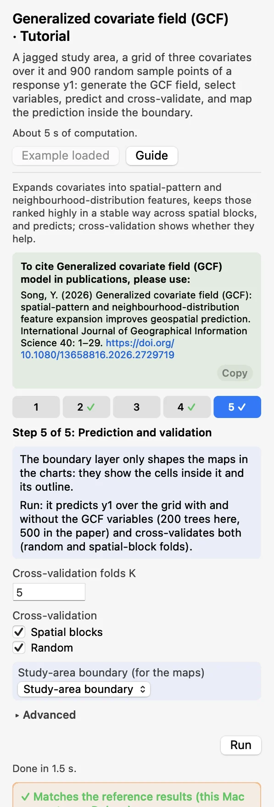
Prediction and validation5 folds, spatial blocks and random, and the boundary for the maps. Click Run.
Three things are worth knowing while you step through. In step 3, leave the cell IDs empty to match the samples by location; several points in one cell are averaged. The run at step 4 cannot be skipped: step 5 runs after it, and repeats the selection inside its folds. And the tutorial uses B = 10 resamples and smaller forests to stay quick; for real work keep the defaults, which are the paper's (B = 80, and 200 and 500 trees).
After the last run the Chart page opens with the feature figure, and the panel lists every result under Outputs: the prediction fields, the tables, then the figures. A green line says that the results match the reference results computed with R.
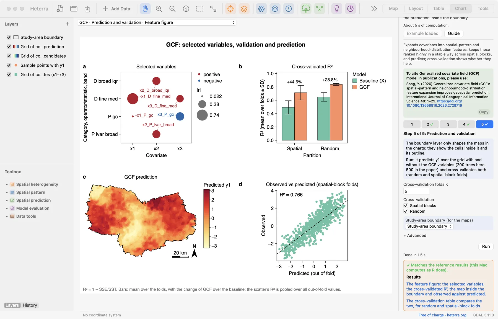
2.3 With your own data
- Add the grid and the samples (Add Data), open GCF from the Toolbox and choose the grid and its covariates in step 1.
- Start with buffer radii of 2 to 10 grid spacings, in the units of the grid's coordinates. They can be typed as a list or as from:to:by.
- Set the block size L above the range of the residual spatial dependence; the paper uses twice the residual variogram range. Keep B = 80 and the default numbers of trees.
- Coordinates must be projected, because the buffers are in their units. For a layer in longitude and latitude, step 1 asks for a Projected CRS for computing, which is kept with the run. What the map displays has no effect on the result.
- The chosen response is not offered among the variables, and a grid field with the name of y is refused: a model given y to predict y says nothing.
- A missing covariate value is replaced by the median only inside the generated variables. The raw covariate is not filled, and a missing value at a grid cell stops the prediction step. Constant covariates are dropped.
- With few samples or few blocks, lower B, the number of folds K or the block size.
- Since version 1.6.0, when the grid is a layer of polygon cells the maps in the charts draw the polygons, coloured by value.
- Column names, category values and file names are best written with English letters, digits and underscores.
3Reading the results
Read the results in this order: the selected variables first (what was kept?), then the cross-validation (do they help?), then the maps and the scatter (where and how well?).
3.1 Selected variables
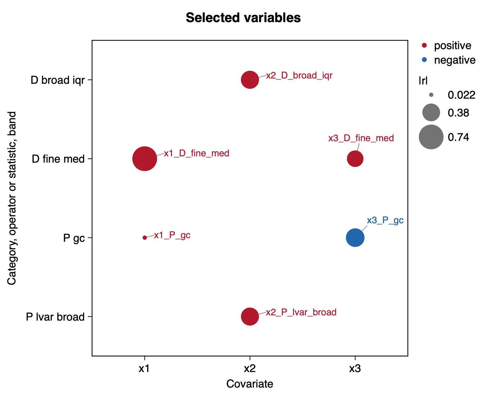
What it shows. The bubble's area is |r| and its colour the sign of r, where r is the Pearson correlation between the variable and y over the samples. The table Selected variables and their correlation with y gives the numbers; the table Selected variables adds each variable's selection frequency, the share of the resamples in which it was ranked in the top K.
| Variable | Covariate | Category | Band | r | Frequency |
|---|---|---|---|---|---|
| x1_D_fine_med | x1 | D | fine | 0.739 | 1.0 |
| x2_D_broad_iqr | x2 | D | broad | 0.395 | 1.0 |
| x2_P_lvar_broad | x2 | P | broad | 0.391 | 1.0 |
| x3_D_fine_med | x3 | D | fine | 0.330 | 1.0 |
| x3_P_gc | x3 | P | single | −0.418 | 0.8 |
| x1_P_gc | x1 | P | single | 0.022 | 0.6 |
How to read it. Six of the 90 GCF variables were kept, next to the three raw covariates, which are always in the model. The selection recovers what the simulation put in: the local median of x1 has the strongest correlation with y1, and two measures of the spread of x2 in the broad neighbourhood were chosen. A group (one covariate's P variables, or its D variables) contributes one member only, so other variables with a frequency of 1.0 are listed as not selected. r is a description, not the selection rule: x1_P_gc was selected with r = 0.02. Whether the set helps is decided in the next section.
"The generalized covariate field (Song 2026) was generated for the three covariates with buffer radii of 2, 4 and 6 km (90 variables). Stability selection in spatial blocks of 16 km (B = 10, π = 0.6, top 20) kept six variables in addition to the raw covariates (Table X); the neighbourhood median of x1 had the strongest correlation with y1 (r = 0.74)."
3.2 Cross-validation and the prediction map
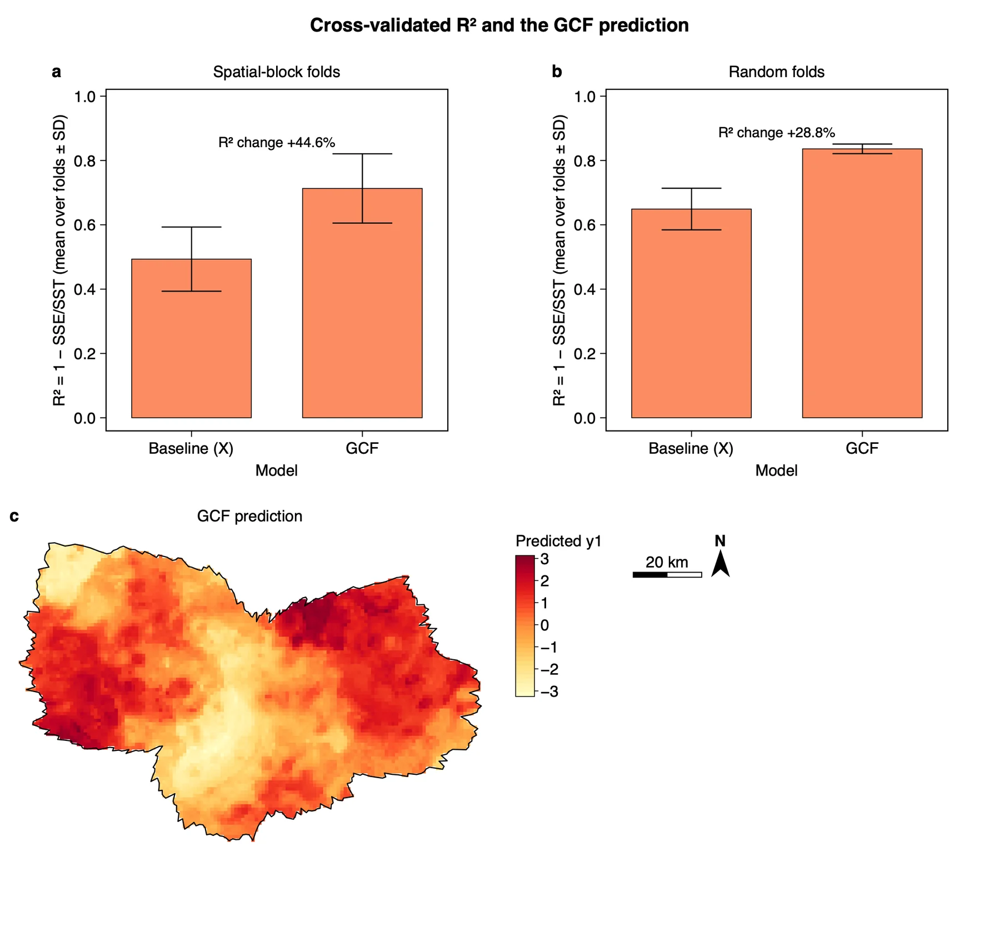
pred_gcf.What it shows. The baseline is a random forest on the raw covariates; GCF is the same forest on the selected set. In every fold the selection is run again on the training samples only, so the test samples play no part in it. R² = 1 − SSE/SST. The table Cross-validation has one row per partition:
| Folds | Model | R² (mean ± SD) | RMSE | Pooled R² |
|---|---|---|---|---|
| Spatial blocks | Baseline (X) | 0.493 ± 0.100 | 1.026 | 0.570 |
| Spatial blocks | GCF | 0.713 ± 0.108 | 0.752 | 0.766 |
| Random | Baseline (X) | 0.649 ± 0.065 | 0.909 | 0.658 |
| Random | GCF | 0.836 ± 0.015 | 0.624 | 0.839 |
How to read it. Compare the two models within a partition. Under spatial-block folds R² rises from 0.49 to 0.71 and RMSE falls from 1.03 to 0.75. The number above the bars (+44.6%) is the change as a percentage of the baseline's R², not a difference in percentage points; when the baseline's R² is negative its sign is misleading, so compare the two R² values directly there. Always set the gain against the fold SD: a gain smaller than the SD of the folds is not established. Random folds give higher values for both models (0.65 and 0.84), because test samples lie next to training samples; say which partition you report. The "pooled" columns compute R² once over all out-of-fold predictions and differ from the fold means.
The map shows pred_gcf at the cells inside the boundary. The prediction layer and the tables keep every cell, with three fields: pred_base, pred_gcf and pred_diff = pred_gcf − pred_base. Map pred_diff to see where the GCF variables change the prediction.
"In five-fold spatial-block cross-validation, with the variable selection repeated in every fold, GCF raised R² from 0.49 ± 0.10 (raw covariates) to 0.71 ± 0.11 and lowered RMSE from 1.03 to 0.75; in random folds R² rose from 0.65 ± 0.06 to 0.84 ± 0.01 (R² = 1 − SSE/SST, mean ± SD over folds)."
3.3 Observed against predicted
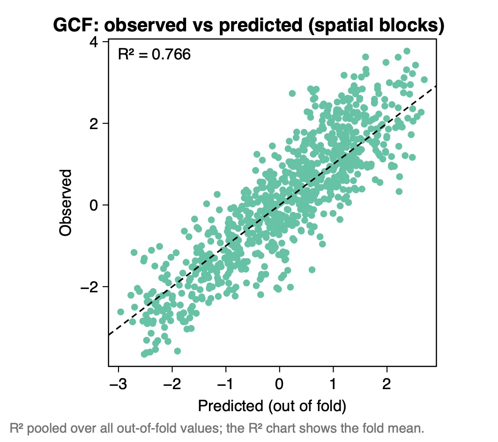
What it shows. The out-of-fold predictions of the GCF model against the observed values, for the 844 sampled cells (the 900 points, averaged where several fall in one cell).
How to read it. Points along the dashed line are predicted well; a cloud flatter than the line means that high values are under-predicted and low values over-predicted. The R² written in the chart (0.766) is pooled over all out-of-fold values, so it is not the fold mean of the bar chart (0.713). Give one of them and say which. The table Out-of-fold predictions has the values behind the chart, for both models and both partitions.
"Observed and out-of-fold predicted values under spatial-block cross-validation follow the 1:1 line (pooled R² = 0.77, n = 844; Figure X)."
3.4 Maps of the selected variables
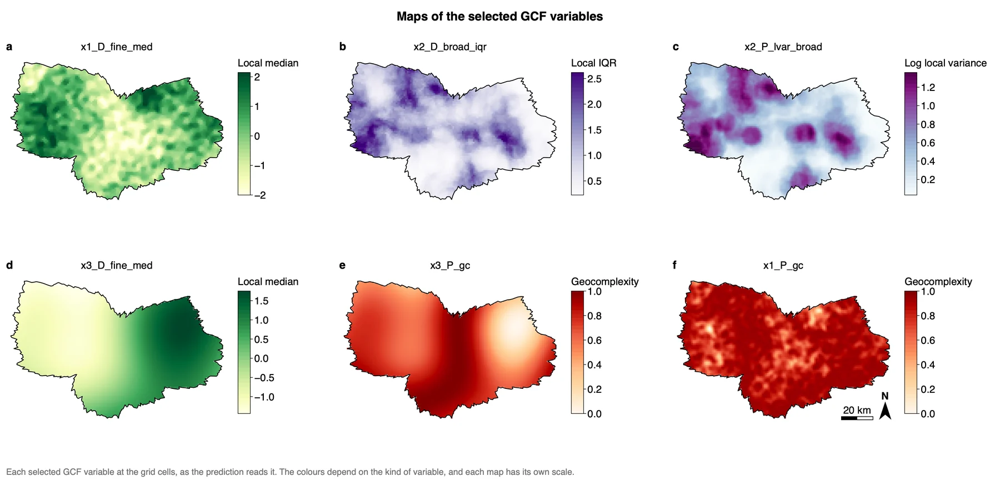
What it shows. The figure Maps of the selected GCF variables draws each selected P and D variable at the grid cells, as the prediction reads it: six maps to a page (landscape A4, three across and two down), further variables on the next page.
How to read it. Each map has its own colour scale: compare places within a map, not colours between maps. In the tutorial the colours follow the kind of variable (a local median in green, LISA and skew in red and blue about 0); with your own data each map gets a different palette by default, or colours by kind under Colours of the variable maps (Advanced). Use these maps to say in words what a selected variable picks up, for example where the surroundings of x2 are most variable.
3.5 The feature figure
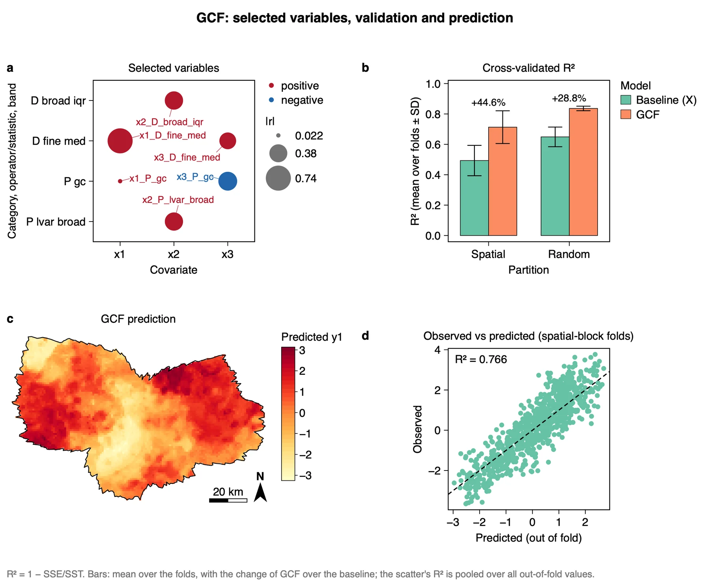
pred_gcf; d, observed against out-of-fold predicted values (spatial-block folds).The feature figure holds all of GCF's charts on one page, one journal page wide. With Map units (Advanced) known, the map has no axes and carries a north arrow and a scale bar; the tutorial sets the units to kilometres because its coordinates have no coordinate system. This changes only the charts. Export the figure from the Chart page as PDF or SVG (vector) or PNG at 300 dpi; Data CSV saves the numbers behind it. Export results in the panel writes a report of the run (Part 1).
3.6 Reading the results together
The three runs tell one story: the covariates are expanded into neighbourhood variables (step 2), a few of them are kept because they are chosen again and again (step 4), and the cross-validation shows whether the kept set helps the prediction (step 5). Read them in this order:
- Selected variables: what was kept, and how often it was chosen.
- Cross-validation: whether GCF is ahead of the baseline, first of all in spatial-block folds, and by more than the fold SD.
- Maps of the selected variables: whether the kept variables show spatial structure that you can name.
- The prediction map and observed against predicted: where GCF changes the prediction (
pred_diff) and how well the high and low values are met.
What GCF is notIt is not a prediction model of its own. It makes new variables from the covariates, and a model then uses them; in Heterra this model is a random forest. It also does not give the contribution of a single variable: the cross-validation tests the selected set as a whole.
3.7 From the results to a manuscript
| Section | What to write | From Heterra |
|---|---|---|
| Methods | The P and D variables; the buffer radii and the two bands; the selection (block size L, B, π, top K); the two kinds of folds; that the selection is repeated inside every fold | The settings of the three runs (in the exported report); table Variable catalogue |
| Results | Follow the order of the analysis: how many variables were generated and which were kept, with their frequencies; then R² and RMSE of the baseline and of GCF in both kinds of folds, as mean ± SD; then the prediction map | Figure Feature figure or the single figures; tables Selected variables and Cross-validation |
| Discussion | What the kept variables describe; whether the gain is larger in spatial-block folds, that is, when predicting away from the samples; where the two predictions differ | Figure Maps of the selected GCF variables; a map of pred_diff |
- Every covariate must be known at every grid cell, because the GCF variables are also computed at the cells to predict.
- Choose buffer radii from about one cell up to the range of the spatial dependence of the response, or beyond it. The variogram that gives this range is fitted outside Heterra.
- Lower B only while you try settings. Use the default again for the run that you report.
- Report the buffer radii, the bands, B, π, K, the block size L and the seeds, so that a reader can repeat the run.
4Exercises
Exercises 1 to 3 use the example. Exercise 4 is for your own data.
Exercise 1Read
Run the three runs of the example with their settings. Which selected variable has a negative correlation with y1, and how large is it? What are the RMSE of the baseline and of GCF under random folds?
Answer
x3_P_gc, the geocomplexity of x3, with r = −0.418: it is the only blue bubble. Under random folds the RMSE is 0.909 for the baseline and 0.624 for GCF (table Cross-validation).
Exercise 2Explore
Open the table Selected variables of the run at step 4 and look at the columns frequency and group_fire. A group passes when any of its members is in the top K in at least a share π of the resamples (π = 0.6 here). Which selected variable would not pass with π = 0.7? Check by setting Group threshold π to 0.7 and running step 4 again.
Answer
x1_P_gc. Its group, the P variables of x1, was in the top K in 0.6 of the resamples, exactly at the threshold. The P group of x3 has 0.9 and the other groups 1.0, so the other five variables stay. Both runs are kept in History.
Exercise 3Interpret
A colleague writes: "The geocomplexity of x1 was selected by the stability procedure, so it is an important predictor of y1." Check this against the tables. Is the sentence justified?
Answer
No. x1_P_gc passed at the lowest possible frequency (0.6) and its correlation with y1 is 0.02. Stability is not evidence of prediction: noise passes too. What the results support is a statement about the set: with the selected variables, cross-validated R² under spatial blocks rises from 0.49 to 0.71. They do not show the contribution of a single variable.
Exercise 4Your data
Run GCF on your own grid and samples with the default B and numbers of trees. Write three sentences for a results section: one on the settings (buffer radii, block size, B) and the variables selected, one on R² and RMSE of the baseline and of GCF under spatial-block folds, and one on what the map of pred_diff shows. Export the feature figure as PDF.
Checklist
Is the block size larger than the range of the residual spatial dependence? Did you give the fold SD with each R², and is the gain larger than it? Did you say whether R² is the fold mean or pooled, and which partition it comes from? Did you avoid claims about single selected variables that the cross-validation does not test?
References
- Song, Y. (2026). Generalized covariate field (GCF): spatial-pattern and neighbourhood-distribution feature expansion improves geospatial prediction. International Journal of Geographical Information Science 40: 1–29. doi:10.1080/13658816.2026.2729719
- Mokany, K., McCarthy, J.K., Falster, D.S., Gallagher, R.V., Harwood, T.D., Kooyman, R. & Westoby, M. (2022). Patterns and drivers of plant diversity across Australia. Ecography 2022(11): e06426. doi:10.1111/ecog.06426
- R package gcf: cran.r-project.org/package=gcf. Heterra's results match gcf 0.1.1, with ranger 0.18.0 and randomForest 4.7-1.2.
Heterra guide, for version 1.6.0. © 2026 Yongze Song. Documentation and tutorial data: CC BY 4.0.